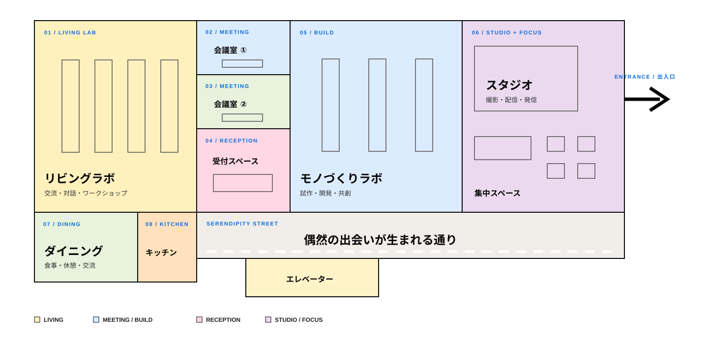

ビジネスプロデューサー
新たな仲間づくりの拠点としてGarraway Fを立ち上げ、日々チャレンジしながら運営中。
SOCIAL CHALLENGE LIVING LAB · FUKUOKA
社会課題に挑戦する、
まちのリビングラボ。
課題の当事者 × 尖った挑戦者・変革者 × 技術やアセットを持つ仲間。
偶発的な出会いから、できることを小さく始める。
SERENDIPITY
使ってください！
やりましょうよ！
できることから、小さく始める。
CULTURAL ENGINEERS
新たな仲間づくりの拠点としてGarraway Fを立ち上げ、日々チャレンジしながら運営中。

初めて来たその日からつながりが生まれるような、心地よい場づくりに挑戦中。

皆さんの想いを聞き、仲間づくりと出会いのお手伝いをします。
FUTURISTS
多様な領域の専門家・実践者とともに、未来を考えます。
 両角 将太F Ventures｜代表
両角 将太F Ventures｜代表 池田 美奈子編集者・デザイン研究者
池田 美奈子編集者・デザイン研究者 石丸 修平福岡地域戦略推進協議会
石丸 修平福岡地域戦略推進協議会 東 博暢日本総合研究所
東 博暢日本総合研究所 岸原 稔泰GxPartners
岸原 稔泰GxPartners 村岡 浩司一平ホールディングス
村岡 浩司一平ホールディングス 中村 俊介しくみデザイン
中村 俊介しくみデザイン 今津 研太郎TRIART
今津 研太郎TRIART 岩永 真一福岡テンジン大学
岩永 真一福岡テンジン大学 松岡 恭子建築家
松岡 恭子建築家 最首 英裕グルーヴノーツ
最首 英裕グルーヴノーツ 森田 泰暢福岡大学
森田 泰暢福岡大学 木村 忠昭アドライト
木村 忠昭アドライト 中島 賢一福岡eスポーツ協会
中島 賢一福岡eスポーツ協会 宮代 陽之国際経済研究所
宮代 陽之国際経済研究所 森戸 裕一日本DX推進協会
森戸 裕一日本DX推進協会FACILITY
人が集まり、話し、挑戦が始まる場所。
福岡から世界へ。発信と表現のためのスタジオ。
コンシェルジュが人と人をつなぐ、まちのリビング。
挑戦する人から学び、発信し、仲間をつくる場所。
FLOOR MAP / TENJIN CLASS 3F
交流、対話、試作、集中、発信。目的に合わせて自由に使える、多様なスペースをひとつのフロアに。

※ レイアウトは変更になる場合があります。
HOW TO JOIN
学生、会社員、起業家、フリーランスの方も無料です。
公式LINEを友だち追加し、案内に沿って会員登録。
その月のテーマに沿って参加チケットを記入。
コンシェルジュとの対話から、つながりを始めます。
ACCESS
〒810-0021
福岡市中央区今泉1丁目19番22号
天神CLASS 3階
西鉄福岡（天神）駅南口より徒歩5分
地下鉄七隈線「天神南」駅1番出口から徒歩6分
地下鉄空港線「天神」駅2番出口から徒歩8分
西鉄バス「今泉1丁目」バス停すぐそば
GARRAWAY F